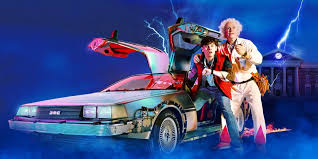

Back To The Future Is A True Classic
Back to the Future revolutionized 80s cinema with its innovative storytelling, humor, and groundbreaking special effects. It popularized time-travel narratives, set a new standard for blockbusters, and became a cultural phenomenon, inspiring sequels and shaping the decade's filmmaking trends.
80's Movies? Yeah we got that!

Popular 80s action movies like Die Hard, Predator, and RoboCop transformed the film industry with their high-octane storytelling, practical effects, and iconic heroes. They established the action blockbuster formula, blending intense stunts with larger-than-life characters, and influenced decades of filmmaking, cementing the genre as a Hollywood staple.
The 80's made many actors a household name!

The 1980s launched the careers of numerous iconic actors, including Tom Cruise, Eddie Murphy, Harrison Ford, Molly Ringwald, Robin Williams, and Arnold Schwarzenegger. These stars became cultural icons through blockbuster films in action, comedy, and teen drama, reshaping Hollywood and leaving a lasting impact on pop culture for years to come.